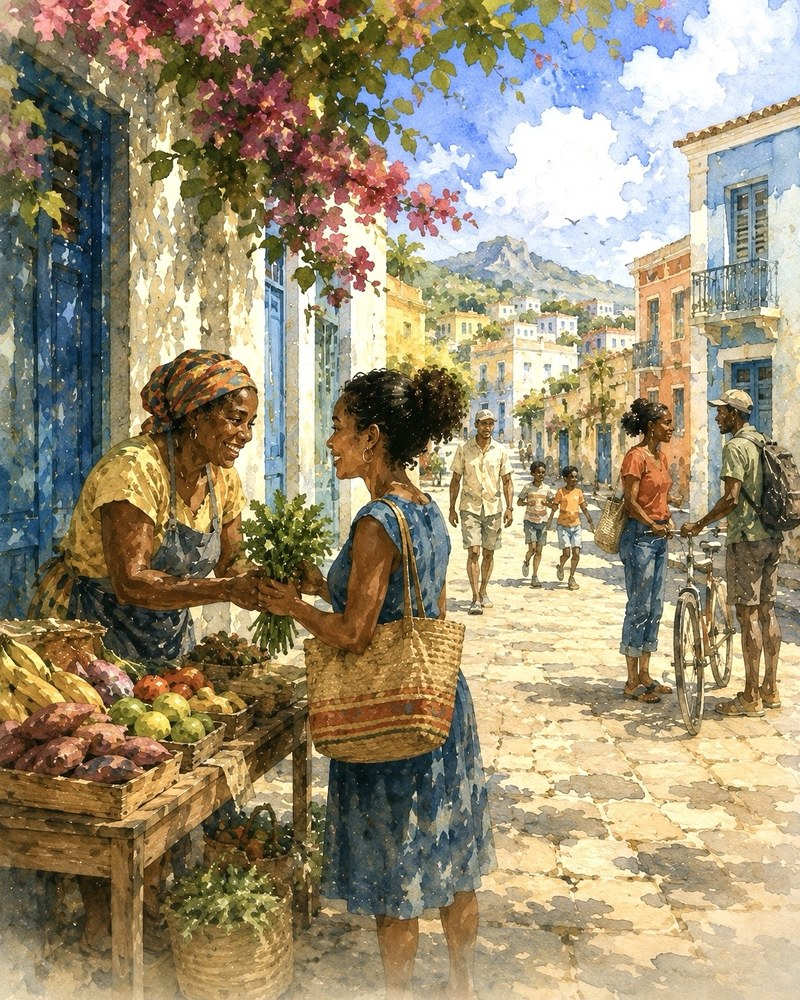
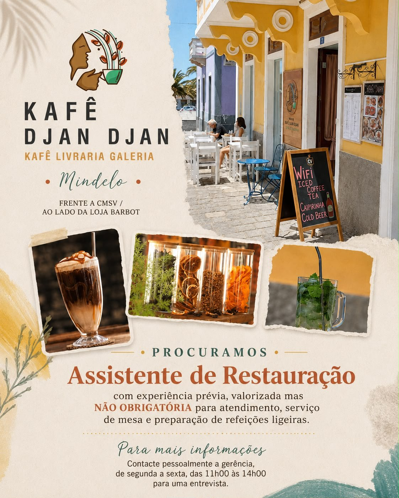

A PRASA — Um lugar para encontrares o que te move.

Vem à procura do que precisas — ou descobre algo que nem sabias que procuravas.
Encontra oportunidades para crescer e aprender. Mergulha na cultura local e descobre o que fazer. Encontra informação prática para o dia a dia. Descobre lugares que vale a pena conhecer e formas de participar ou contribuir para a comunidade.
Encontra o que te move.
A ideia por detrás da prasa
Porque existe A PRASA
Encontrar informação é uma coisa. Saber o que importa — e o que fazer a seguir — é outra.
A PRASA foi concebida para tornar esse caminho mais fácil.
Uma sessão para crianças promovida pela Alternativa Galeria; o cartaz não especifica outros detalhes sobre a atividade para além da idade e do horário.
Revisto em 17 de agosto de 2026 com base no cartaz do evento publicado pelo organizador.
Selecionado como Destaque Local da A PRASA — uma rubrica editorial rotativa que destaca uma entidade ou atividade local. Esta rubrica não é promoção paga e não representa patrocínio nem recomendação.
Explore São Vicente com uma empresa local de turismo sediada em Mindelo, que oferece passeios guiados de caráter cultural, costeiro e de natureza.
Convém saber
A disponibilidade, os horários, os preços e os detalhes específicos das visitas podem mudar. Confirme diretamente com a Green Line Tours as ofertas atuais e os detalhes de reserva antes de planear a sua visita.
Revisto em 24 de agosto de 2026
Selecionado como Destaque Local da A PRASA — uma rubrica editorial rotativa que destaca uma entidade ou atividade local. Esta rubrica não é promoção paga e não representa patrocínio nem recomendação.
Cultura, atividades e coisas para fazer em Mindelo e São Vicente
Mindelo Cultural
Revisto em 22 de agosto de 2026
Mindelo Cultural é um recurso operado de forma independente, não é um serviço da A PRASA e A PRASA não recebe qualquer compensação da entidade. Visite diretamente o respetivo site para consultar as ofertas atuais, disponibilidade, preços e reservas.
Explore experiências culturais locais, atividades e coisas para fazer através do Mindelo Cultural, um guia de Mindelo e São Vicente operado de forma independente.
Convém saber
A PRASA selecionou o Mindelo Cultural como um ponto de partida externo útil. Não é um serviço, patrocínio ou recomendação da A PRASA, e A PRASA não recebe qualquer compensação da entidade. As ofertas atuais, disponibilidade, preços e reservas são definidos pelo Mindelo Cultural — confirme diretamente no respetivo site.
Formações, recursos de desenvolvimento profissional, ferramentas para negócios e oportunidades relacionadas com o trabalho que podes explorar diretamente junto da entidade responsável.
Candidaturas abertas até 30 de agosto · São Vicente
Motorista — Nível 3
Candidate-se até 30 de agosto de 2026
Escola do Mar — EMAR / Kre+
Candidate-se a Motorista — Nível 3, uma formação profissional marítima inicial da Escola do Mar (EMAR), em São Vicente. A atual oferta na Kre+ indica 25 vagas, matrícula isenta e propina de 0 CVE/mês.
Revisto em 25 de agosto de 2026 com base na ficha do curso na Kre+.
A Kre+ indica atualmente que as candidaturas estão abertas até 30 de agosto de 2026. Não foram confirmadas, nas fontes oficiais consultadas, outras condições aplicáveis aos candidatos, por isso consulte a ficha atual do curso antes de se candidatar. A informação sobre taxas e propina acima aplica-se especificamente a esta oferta atual.
Revisto em 25 de agosto de 2026 com base na ficha do curso na Kre+.
Candidaturas abertas até 30 de agosto · São Vicente
Assistente Eletrotécnico Naval — Nível 4
Candidate-se até 30 de agosto de 2026
Escola do Mar — EMAR / Kre+
Candidate-se a Assistente Eletrotécnico Naval — Nível 4, uma formação profissional marítima inicial da Escola do Mar (EMAR), em São Vicente. A atual oferta na Kre+ indica 25 vagas, matrícula isenta e propina de 0 CVE/mês.
Revisto em 25 de agosto de 2026 com base na ficha do curso na Kre+.
A Kre+ indica atualmente que as candidaturas estão abertas até 30 de agosto de 2026. Não foram confirmadas, nas fontes oficiais consultadas, outras condições aplicáveis aos candidatos, por isso consulte a ficha atual do curso antes de se candidatar. A informação sobre taxas e propina acima aplica-se especificamente a esta oferta atual.
Revisto em 25 de agosto de 2026 com base na ficha do curso na Kre+.
Explore programas de línguas, informática, inglês para o trabalho e outras áreas de aprendizagem da Myrtle Atividades Educativas, em Mindelo.
Convém saber
Os programas, horários, preços e disponibilidade de inscrições podem mudar. Consulte diretamente a Myrtle para obter informações atuais antes de avançar.
Revisto em 17 de agosto de 2026 com base no atual site oficial da entidade.
A recrutar para 2026/2027 · Confirme a disponibilidade atual
Academia de Estudo Crescer — Recrutamento de Monitores de Sala de Estudo
Academia de Estudo Crescer
A Academia de Estudo Crescer está a recrutar monitores de sala de estudo para Matemática, Ensino Básico, Educação Especial e Física/Química para o ano letivo de 2026/2027.
Revisto em 17 de agosto de 2026 com base no cartaz de recrutamento fornecido pelo fundador.
EmpregoOportunidade de emprego
Academia de Estudo Crescer
Recrutamento de Monitores de Sala de Estudo
Ano letivo
2026/2027
Áreas
Matemática, Ensino Básico, Educação Especial e Física/Química
Entrega do CV
Secretarias de Madeiralzinho ou Monte Sossego
Horário de entrega
08:00–12:00 e 14:00–18:00
Requisitos
Sentido de responsabilidade e compromisso; boa capacidade de comunicação e aptidão para trabalhar com crianças e jovens. Formação ou experiência na área relevante é valorizada.
Convém saber
Os CV são aceites nas secretarias de Madeiralzinho ou Monte Sossego durante o horário publicado no anúncio de recrutamento. O cartaz não indica prazo de candidatura, por isso confirme se o recrutamento continua aberto antes de entregar a candidatura.
Revisto em 17 de agosto de 2026 com base num cartaz de recrutamento fornecido pelo fundador, recebido através de um grupo local de igreja/comunidade.

EmpregoOportunidade de emprego
A contratar agora · Mindelo
Kafê Djan Djan — Assistente de Restauração
Kafê Livraria Galeria · entrevistas presenciais de segunda a sexta, 11:00–14:00
Kafê Djan Djan, Mindelo
Revisto em 22 de agosto de 2026 com base no folheto de recrutamento fornecido pelo fundador.
EmpregoOportunidade de emprego
Kafê Djan Djan, Mindelo
Kafê Djan Djan — Assistente de Restauração
Localização
Kafê Djan Djan Mindelo — frente a CMSV / ao lado da loja Barbot
Entrevistas
Presencialmente com a gerência, de segunda a sexta, 11h00–14h00
Publicação original (português)
PROCURAMOS Assistente de Restauração — com experiência prévia, valorizada mas NÃO OBRIGATÓRIA para atendimento, serviço de mesa e preparação de refeições ligeiras.
Kafê Djan Djan Mindelo. Frente a CMSV / ao lado da loja Barbot.
Para mais informações: contacte pessoalmente a gerência, de segunda a sexta, das 11h00 às 14h00, para uma entrevista.
Convém saber
A experiência prévia é valorizada, mas não obrigatória. O folheto não indicava salário, benefícios, número de telefone, e-mail nem prazo de candidatura, por isso esses elementos não são apresentados aqui. Candidate-se presencialmente durante o horário indicado.
Revisto em 22 de agosto de 2026 com base no folheto de recrutamento fornecido pelo fundador.
GratuitoOnlineDisponível em portuguêsCertificado de Conclusão
Competências empresariais e digitais gratuitas · Online
GratuitoOnlineDisponível em portuguêsCertificado de Conclusão
HP Foundation
HP LIFE
Detalhes
32 cursos gratuitos e ao seu ritmo sobre negócios, competências digitais e desenvolvimento profissional. Todos os cursos estão disponíveis em oito línguas, incluindo português.
Convém saber
Conclua um curso para receber gratuitamente um Certificado de Conclusão. A HP LIFE informa que os seus certificados não são acreditados nem reconhecidos por entidades educativas.
Revisto em 10 de agosto de 2026 com base em informações publicadas pela entidade.
OpenLearn: cursos gratuitos da The Open University
Detalhes
O OpenLearn disponibiliza centenas de cursos gratuitos em nove áreas temáticas, incluindo digital e informática, línguas, finanças e negócios, ciência e sociedade. Todos os cursos do OpenLearn são gratuitos e podem ser iniciados de imediato.
Convém saber
O material consultado para este registo estava em inglês; a disponibilidade em português não foi confirmada. A conclusão com êxito pode dar direito a uma Declaração de Participação gratuita, mas os cursos gratuitos do OpenLearn não atribuem créditos formais para uma qualificação e os emblemas digitais estão disponíveis apenas em alguns cursos.
Revisto em 8 de agosto de 2026 com base em informações publicadas pela entidade.
Instituto do Emprego e Formação Profissional (IEFP)
IEFP PEPE: portal de emprego e estágios profissionais
Detalhes
O PEPE é a plataforma do IEFP para oportunidades de emprego e estágios profissionais em Cabo Verde. Os visitantes podem consultar anúncios, criar uma conta de candidato e iniciar sessão para se candidatarem diretamente através da entidade.
Convém saber
É necessário ter uma conta e iniciar sessão para se candidatar. Cada anúncio tem o seu próprio prazo e condições. Um anúncio apresentado no PEPE não deve ser considerado atual sem verificar os respetivos detalhes.
Revisto em 8 de agosto de 2026 com base em informações publicadas pela entidade.
São VicenteFormaçãoCandidatar-se através da entidade
IEFP Cabo Verde
IEFP — Formação em São Vicente
Detalhes
Consulte diretamente no IEFP as opções atuais de formação profissional para São Vicente. As ofertas atuais incluem áreas práticas como atendimento ao cliente, vendas, restauração e bebidas, negócios, marketing, software e competências técnicas.
Convém saber
Os cursos, vagas, requisitos de entrada e disponibilidade de candidaturas podem mudar. Consulte o anúncio específico do IEFP antes de se candidatar.
Revisto em 10 de agosto de 2026 com base em informações publicadas pela entidade.
Aprendizagem gratuita em áreas como IA, cibersegurança, dados, tecnologias de informação, gestão de projetos, atendimento ao cliente e competências para o trabalho. A IBM disponibiliza aprendizagem para adultos, estudantes universitários e alunos do ensino secundário.
Convém saber
A aprendizagem disponível e as credenciais digitais variam consoante o percurso. Consulte o catálogo do IBM SkillsBuild para verificar os requisitos de um curso ou credencial específicos.
Revisto em 10 de agosto de 2026 com base em informações publicadas pela entidade.
Percursos de aprendizagem e módulos gratuitos, ao seu ritmo, sobre tecnologias Microsoft, incluindo IA, cloud, dados, segurança e outras competências técnicas. Pode aceder à formação sem criar uma conta; ao iniciar sessão, pode acompanhar o progresso e as conquistas.
Convém saber
Os conteúdos de formação do Microsoft Learn são gratuitos, mas os exames de certificação Microsoft são separados e podem ter custos.
Revisto em 10 de agosto de 2026 com base em informações publicadas pela entidade.
Formas atuais e concretas de fazer voluntariado, doar, contribuir com bens úteis ou participar diretamente. Confirma com cada organização as necessidades e formas de apoio atuais.
Estás a planear uma ação de voluntariado, iniciativa de proximidade, angariação de fundos ou ação comunitária? Envia à A PRASA para consideração.
VoluntariadoDoar dinheiro
Cruz Vermelha de Cabo Verde
Delegação local de São Vicente / rede nacional de voluntariado
A Cruz Vermelha de Cabo Verde aceita inscrições de voluntários através da sua rede nacional de voluntariado e tem uma delegação local em São Vicente. Os interessados podem inscrever-se junto da entidade e coordenar diretamente as suas atividades com a Cruz Vermelha.
Convém saber
As atividades de voluntariado, colocação, formação e horários são organizados pela Cruz Vermelha de Cabo Verde. O sistema de inscrição online é nacional; contacte a delegação de São Vicente para tratar dos aspetos locais.
Revisto em 8 de agosto de 2026 com base em informações publicadas pela entidade.
A Biosfera, sediada em Mindelo, recruta voluntários para trabalhos de conservação e sensibilização ambiental em São Vicente e ilhas próximas. As oportunidades atuais incluem conservação de tartarugas, comunicação e educação ambiental, sendo também especificamente procuradas competências de angariação de fundos.
Convém saber
O voluntariado na conservação de tartarugas é sazonal, normalmente de junho a outubro. As funções exigem competências e condições físicas diferentes; confirme diretamente com a Biosfera a capacidade e as condições atuais antes de fazer planos.
Revisto em 8 de agosto de 2026 com base em informações publicadas pela entidade.
A Nô Bai Associação trabalha com comunidades em São Vicente através de atividades nas áreas da educação, saúde, ambiente e apoio comunitário. O seu programa de voluntariado internacional aceita candidaturas ao longo de todo o ano para colocações em São Vicente.
Convém saber
As candidaturas incluem formulário, carta de motivação e entrevista. A estadia mínima indicada é de sete dias, sendo preferidos pelo menos 15 dias. A formação antes da partida é obrigatória; os voluntários suportam os próprios voos e o programa tem custos associados à estadia.
Revisto em 8 de agosto de 2026 com base em informações publicadas pela entidade.
O Espaço Jovem gere centros juvenis e atividades para crianças e jovens em Mindelo. Atualmente, a organização convida as pessoas a fazer voluntariado, contribuir financeiramente ou doar materiais úteis e alimentos para os seus programas.
Convém saber
Contacte o Espaço Jovem antes de levar doações materiais ou organizar trabalho voluntário, para que a organização possa confirmar as suas necessidades e modalidades atuais.
Revisto em 8 de agosto de 2026 com base em informações publicadas pela entidade.
As Aldeias Infantis SOS apoiam crianças, jovens e famílias em Cabo Verde, incluindo através de programas em São Vicente. Explore diretamente com a organização as formas atuais de apoiar o seu trabalho.
Convém saber
As Aldeias SOS publicam atualmente informações contraditórias sobre a disponibilidade de voluntariado. Contacte a organização antes de contar com o voluntariado como opção disponível.
Revisto em 15 de agosto de 2026 com base em informações publicadas pela entidade.
Faça voluntariado com a SabMais em Mindelo, apoiando estudantes do ensino secundário nos estudos e no seu percurso para o ensino superior.
Convém saber
É exigido um compromisso mínimo de duas semanas e aplicam-se os requisitos da entidade. Os voluntários são responsáveis pelas viagens e outros custos indicados; confirme as condições atuais antes de reservar a viagem. A entidade indica atualmente alojamento por 250 €/mês, incluindo água, eletricidade e gás.
Revisto em 15 de agosto de 2026 com base em informações publicadas pela entidade.
Explora lugares e serviços úteis em Mindelo e São Vicente através de um diretório revisto e de localizações no mapa cujas coordenadas foram verificadas.
Estão a ser adicionadas e verificadas mais localizações.
Apenas pontos de orientação de exemplo — não constituem o diretório completo nem uma classificação de lugares. O diretório continua a ser a referência principal.